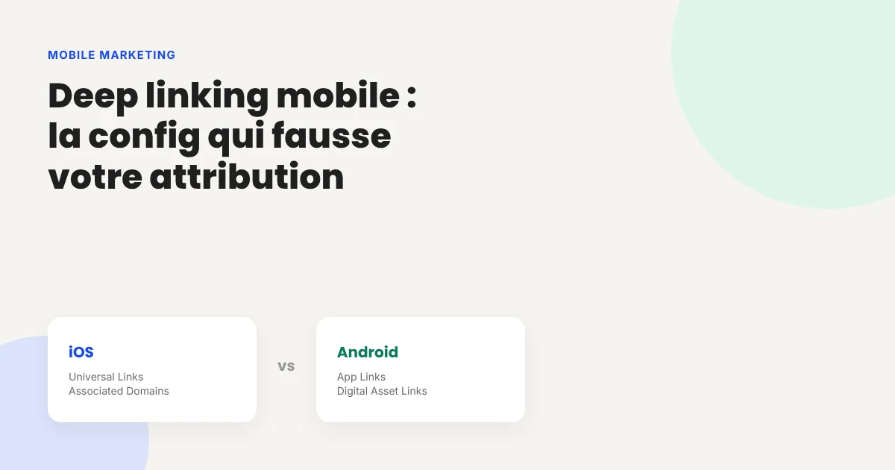

Deep linking mobile : la configuration qui fausse votre attribution d'app
Universal Links sur iOS, App Links sur Android : deux mécanismes natifs, deux documentations officielles, et deux façons très différentes de les mal configurer. Ce que ça casse concrètement dans vos chiffres d'attribution, et comment vérifier votre configuration sans deviner.

Un lien publicitaire qui doit ouvrir une app mobile installée, ou rediriger vers le store si elle ne l'est pas, repose sur un mécanisme qui a longtemps été bricolé avec des schémas d'URL personnalisés (monapp://produit/123). Ce type de lien fonctionne, mais n'a aucun comportement de repli propre : si l'app n'est pas installée, le navigateur ne sait simplement pas quoi en faire. Apple et Google ont chacun remplacé ce bricolage par un mécanisme standardisé basé sur de vraies URL https : les Universal Links sur iOS et les App Links sur Android. Deux noms différents, deux implémentations différentes, un principe commun : vérifier que le site web et l'app appartiennent bien à la même entité, pour que le système d'exploitation sache ouvrir l'app sans passer par une boîte de dialogue de désambiguïsation.
Comment ça marche réellement, côté iOS
Sur iOS, le mécanisme s'appelle Associated Domains. Il repose sur un fichier apple-app-site-association hébergé à la racine du domaine (sous /.well-known/), qui déclare quelles apps sont autorisées à gérer les liens de ce domaine. Côté app, l'entitlement com.apple.developer.associated-domains doit lister les mêmes domaines, chacun préfixé par applinks:. Les deux déclarations doivent se répondre : le site autorise l'app, l'app revendique le domaine. Si l'une des deux manque ou diverge, iOS ne établit pas l'association et le lien s'ouvre dans Safari, même si l'app est installée.
Comment ça marche réellement, côté Android
Android utilise un mécanisme parent mais distinct : le protocole Digital Asset Links, documenté par Google. Le site publie un fichier assetlinks.json sous /.well-known/, qui référence l'empreinte de signature de l'app. Côté app, le fichier manifeste doit déclarer android:autoVerify="true" sur le filtre d'intention concerné. Une fois la vérification réussie, Android ouvre l'app directement au lieu d'afficher une boîte de choix. La vérification de ce lien se fait via la Play Console, dans Release > Setup > App signing, où Google fournit l'extrait JSON exact à publier — une étape qui échoue silencieusement si l'empreinte copiée ne correspond plus après une rotation de clé de signature.
Ce qui casse concrètement l'attribution quand la config est mauvaise
Une mauvaise configuration ne produit presque jamais une erreur visible : le lien fonctionne quand même, il ouvre juste le navigateur au lieu de l'app, ou l'app sans le bon contexte (l'écran d'accueil plutôt que la fiche produit ciblée). Pour l'attribution marketing, la conséquence est la même dans les deux cas : le clic publicitaire et l'ouverture de l'app ne sont plus reliés par le même mécanisme de passage de paramètres, et l'outil d'attribution reçoit une installation ou une session sans contexte de campagne exploitable. Ce type de défaut de configuration est particulièrement difficile à détecter en observation passive, parce que le funnel semble fonctionner du point de vue de l'utilisateur : il arrive quelque part, juste pas forcément là où le lien était censé l'emmener, et sans que le système sache pourquoi.
Comment vérifier sa configuration sans deviner
Plutôt que de suspecter l'outil d'attribution en premier, il vaut mieux vérifier les deux mécanismes natifs directement : sur iOS, un fichier apple-app-site-association doit être servi en HTTPS, sans redirection, avec un content-type JSON valide — un fichier accessible mais mal typé échoue silencieusement à la validation par le système. Sur Android, Google met à disposition un générateur et testeur de Digital Asset Links qui valide directement la correspondance entre le fichier publié et l'app. Dans les deux cas, le test le plus fiable reste manuel : désinstaller l'app, cliquer sur un lien de test, confirmer qu'il ouvre bien le store ; réinstaller, re-cliquer, confirmer que cette fois l'app s'ouvre directement sur le bon écran. Un outil d'attribution tiers ne peut pas compenser une association cassée à ce niveau — il hérite du signal, il ne le répare pas.
FAQ
Quelle est la différence entre un deep link classique et un Universal Link ou App Link ?
Un deep link classique (schéma personnalisé type monapp://) ouvre l'app si elle est installée, mais n'a aucun comportement de repli propre si elle ne l'est pas. Universal Links (iOS) et App Links (Android) utilisent une URL https standard : si l'app est installée et que le domaine est vérifié, elle s'ouvre directement ; sinon, le navigateur affiche la page web correspondante. C'est ce mécanisme de repli qui rend possible un tracking d'attribution fiable.
Pourquoi mon Universal Link s'ouvre dans Safari au lieu de l'app ?
Les causes les plus fréquentes sont : le fichier apple-app-site-association mal servi (mauvais content-type, non accessible en HTTPS sans redirection), l'entitlement associated-domains absent ou mal formé dans l'app, ou un clic initié depuis une app tierce (comme certains réseaux sociaux) qui force intentionnellement l'ouverture dans un navigateur intégré plutôt que dans l'app cible.
Faut-il un outil tiers d'attribution mobile, ou les mécanismes natifs suffisent-ils ?
Universal Links et App Links assurent le routage technique (ouvrir le bon écran au bon moment), pas l'attribution marketing (savoir quelle campagne a généré l'installation). Pour relier une installation à une source publicitaire après un passage par le store, un outil de mesure d'attribution reste nécessaire — mais son efficacité dépend directement d'une configuration native correcte en amont.
Une attribution mobile qui ne colle pas avec vos chiffres de campagne ?
Pour aller plus loin, voir la page Mobile Marketing, et l'article ce qui fait vraiment monter une app dans les stores en 2026.
Pour continuer sur ce sujet.